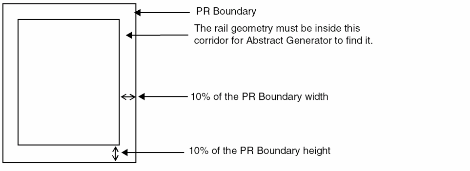

Power Rail Scenarios
To establish a better understanding of how this functionality operates, consider the following scenarios:
-
Rail data is not specified
Example 1: In this scenario, no rail data has been specified and the power rail analyzer has attempted to find rails in each of the cells.
At the end of the analysis phase, a table is produced listing the rails found and the cells that contain them. Also listed in the table are those cells where no rails were found, along with any cells that did not have power or ground nets (in this case there are no such cells).
The cells share common rails, so they are used to initialize the power rail table option.Abstract: 2001/10/26 08:18:59: Info: Power Rail Analysis: =============================================================================== Rails found =============================================================================== rail type net layer width offset shape direction cells ------------------------------------------------------------------------------- 1 power vdd METAL1 6 46.5 abutment horizontal all 2 ground vss METAL1 6 -1.5 abutment horizontal all Abstract: 2001/10/26 08:18:59: Info: Using power rails 1 and 2 to set terminal properties. These settings can be altered using the Adjust “Power rail widths, offsets and shape” table.
Example 2: In this scenario, no rail data has been specified by the user in the Power rail widths, offsets and shape option table.
Viewing the table below, it can be established that no common rails were found, therefore, the option table was not initialized. This usually occurs when cells have mismatched rails and should be in different bins.Abstract: 2001/10/26 08:55:27: Info: Power Rail Analysis: =============================================================================== Rails found =============================================================================== rail type net layer width offset shape direction cells ------------------------------------------------------------------------------- 1 power vdd METAL1 4 48.5 abutment horizontal sc_a2iaia sc_a2iaia_10 sc_a2iaia_11 sc_a2iaia_12 sc_a2iaia_2 sc_a2iaia_3 sc_a2iaia_4 sc_a2iaia_5 sc_a2iaia_6 sc_a2iaia_7 more ... total of 12 2 power vdd METAL1 6 46.5 abutment horizontal sc_and8b sc_and8b_10 sc_and8b_11 sc_and8b_12 sc_and8b_2 sc_and8b_3 sc_and8b_4 sc_and8b_5 sc_and8b_6 sc_and8b_7 more ... total of 12 3 ground vss METAL1 4 -1.5 abutment horizontal sc_a2iaia sc_a2iaia_10 sc_a2iaia_11 sc_a2iaia_12 sc_a2iaia_2 sc_a2iaia_3 sc_a2iaia_4 sc_a2iaia_5 sc_a2iaia_6 sc_a2iaia_7 more ... total of 12 4 ground vss METAL1 6 -1.5 abutment horizontal sc_and8b sc_and8b_10 sc_and8b_11 sc_and8b_12 sc_and8b_2 sc_and8b_3 sc_and8b_4 sc_and8b_5 sc_and8b_6 sc_and8b_7 more ... total of 12 Abstract: 2001/10/26 08:55:27: Warning: Cannot find power and ground rails common to all cells in the bin. Specify using the Adjust “Power rail widths, offsets and shape” table.
Example 3: In this scenario, the user has not specified any rail data because common rails have not been found in all cells in the bin, the Power rail widths, offsets and shape option table is not initialized.
Cells containing no rails were also found, as were cells that did not contain power and ground nets. The scenario where a cell has no rail identified can arise because the net geometry does not extend far enough out to the edge of the cell. Abstract Generator looks for rail geometry in a corridor within 10% of the dimension of the PR boundary.
Cells that do not contain at least one power and ground net pair are also flagged. This might occur if an incorrect text-to-pin map has been used during the Pins step, or if text labels do not overlap the metal geometry.Abstract: 2001/10/26 11:55:41: Info: Power Rail Analysis: =============================================================================== Rails found =============================================================================== rail type net layer width offset shape direction cells ------------------------------------------------------------------------------- 1 power vdd METAL1 6 46.5 abutment horizontal sc_a2iaia sc_a2iaia_10 sc_a2iaia_11 sc_a2iaia_12 sc_a2iaia_13 sc_a2iaia_14 sc_a2iaia_15 sc_a2iaia_16 sc_a2iaia_17 sc_a2iaia_18 more ... total of 25 2 ground vss METAL1 6 -1.5 abutment horizontal sc_a2iaia sc_a2iaia_10 sc_a2iaia_11 sc_a2iaia_12 sc_a2iaia_13 sc_a2iaia_14 sc_a2iaia_15 sc_a2iaia_16 sc_a2iaia_17 sc_a2iaia_18 more ... total of 25 No rails found in any of the following cells: --------------------------------------------- sc_and2a sc_and2a_10 sc_and2a_11 sc_and2a_12 sc_and2a_13 sc_and2a_14 sc_and2a_15 sc_and2a_16 sc_and2a_17 sc_and2a_18 sc_and2a_19 sc_and2a_2 sc_and2a_20 sc_and2a_21 sc_and2a_22 sc_and2a_23 sc_and2a_24 sc_and2a_25 sc_and2a_3 sc_and2a_4 sc_and2a_5 sc_and2a_6 sc_and2a_7 sc_and2a_8 sc_and2a_9 None of the following cells have power and ground nets: ------------------------------------------------------- sc_syncdflop sc_syncdflop_10 sc_syncdflop_11 sc_syncdflop_12 sc_syncdflop_13 sc_syncdflop_14 sc_syncdflop_15 sc_syncdflop_16 sc_syncdflop_17 sc_syncdflop_18 sc_syncdflop_19 sc_syncdflop_2 sc_syncdflop_20 sc_syncdflop_21 sc_syncdflop_22sc_syncdflop_23 sc_syncdflop_24 sc_syncdflop_25 sc_syncdflop_3 sc_syncdflop_4 sc_syncdflop_5 sc_syncdflop_6 sc_syncdflop_7 sc_syncdflop_8 sc_syncdflop_9
-
Values are Specified for the Net Name and Rail Width and Offset
Using the same library used in above example, the Power rail widths, offsets and shape option table is set with values of (vdd 6 46.5) and (vss 6 -1.5).
This time cells are split into two separate tables, depending on whether they contain the user- specified rails.Abstract: 2001/10/26 10:52:47: Info: Power Rail Analysis: =============================================================================== User specified rails =============================================================================== rail type net layer width offset shape direction cells ------------------------------------------------------------------------------- 1 power vdd METAL1 6 46.5 abutment horizontal sc_and8b sc_and8b_10 sc_and8b_11 sc_and8b_12 sc_and8b_2 sc_and8b_3 sc_and8b_4 sc_and8b_5 sc_and8b_6 sc_and8b_7 more ... total of 12 2 ground vss METAL1 6 -1.5 abutment horizontal sc_and8b sc_and8b_10 sc_and8b_11sc_and8b_2sc_and8b_3sc_and8b_4sc_and8b_5sc_and8b_6sc_and8b_7 more ... total of 12 =============================================================================== Rails found in cells not containing user specified rails =============================================================================== rail type net layer width offset shape direction cells ------------------------------------------------------------------------------- 1 power vdd METAL1 4 48.5 abutment horizontal sc_a2iaiasc_a2iaia_10sc_a2iaia_11sc_a2iaia_12sc_a2iaia_2sc_a2iaia_3sc_a2iaia_4sc_a2iaia_5sc_a2iaia_6sc_a2iaia_7 more ... total of 122 ground vss METAL1 4 -1.5 abutment horizontal sc_a2iaia sc_a2iaia_10 sc_a2iaia_11 sc_a2iaia_12 sc_a2iaia_2 sc_a2iaia_3 sc_a2iaia_4 sc_a2iaia_5 sc_a2iaia_6 sc_a2iaia_7 more ... total of 12 -
The Rail Data Exceeds the Character Limit
In this scenario, the data selection exceeds the size limit of characters defined by SKILL for the Power Rail Analysis report.
The Power Rails Analysis report is divided such that each block of message can contain only a limited number of characters in a line. For example, if 100 rail entries are retrieved and the threshold is 80, the first messageINFO(ABS-14004) prints the data of the first 80 rails and the remaining data of the next 20 rails is displayed using theINFO(ABS-19048)message.INFO (ABS-14004): Power Rail Analysis:
=============================================================
Rails found
=============================================================
rail type net layer width offset shape direction cells
-----------------------------------------------------------------------------------
1 ground gnd M0 0.06 5.25 abutment horizontal cell_1
2 ground gnd M0 0.06 5.73 abutment horizontal cell_1
3 ground gnd M0 0.06 6.21 abutment horizontal cell_1
4 ground gnd M0 0.06 6.69 abutment horizontal cell_1
5 ground gnd M0 0.06 0.93 abutment horizontal cell_1
.
.
.
79 ground gnd M5 0.076 5.396 abutment vertical cell_1
80 ground gnd M5 0.076 53.96 abutment vertical cell_1
INFO (ABS-19048): continued...
81 ground gnd M6 0.076 54.582 abutment horizontal cell_1
82 ground gnd M5 0.076 54.644 abutment vertical cell_1
83 ground gnd M5 0.076 55.328 abutment vertical cell_1
84 ground gnd M6 0.076 55.542 abutment horizontal cell_1
84 ground gnd M6 0.076 55.542 abutment horizontal cell_1
85 ground gnd M5 0.076 56.012 abutment vertical cell_1
.
.
.
99 ground gnd M5 0.076 6.08 abutment vertical cell_1
100 ground gnd M5 0.076 60.8 abutment vertical cell_1
Related Topics
Specifying Power and Ground Rail Characteristics
Return to top